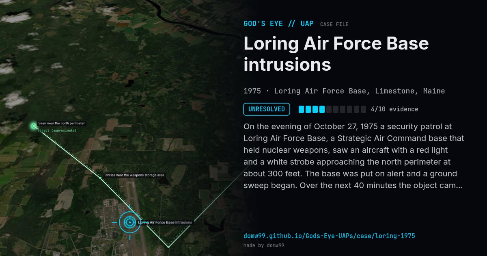

Loring Air Force Base intrusions

On the evening of October 27, 1975 a security patrol at Loring Air Force Base, a Strategic Air Command base that held nuclear weapons, saw an aircraft with a red light and a white strobe approaching the north perimeter at about 300 feet. The base was put on alert and a ground sweep began. Over the next 40 minutes the object came within 300 yards of the restricted weapons storage area at about 150 feet, moving in ways described as helicopter-like, and no one could get a fix on it before it left toward Grand Falls, New Brunswick. Similar reports came from the base, and from other bases, for more than a week; Air Force messages about them were released under the Freedom of Information Act.
Explanation
The Air Force never identified the object; its messages from the base describe an unidentified, helicopter-like aircraft that evaded the ground sweep. No conventional aircraft was found.
What was seen
Shape: Low aircraft with a red light and a white strobe
Witnesses: Security police, including S/Sgt Danny Lewis
Duration: About 40 minutes the first night; repeated for days
Sources
Browse
- United States
- 1970s
- Unresolved
- Military encounters
- Official government documents
- Many independent witnesses
- Military witnesses
- Lights and fireballs